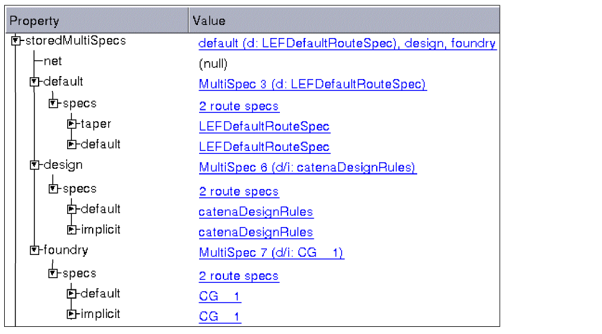

Constraint Groups and Multispecs
In a design, you can have numerous route specs, also known as rule specs or constraint groups. The route specs contain the rules, or constraints, that must be obeyed in order for the design to be correct. Each route spec has a name, and three of the route specs can have special designations:
- The foundry route spec comes from the technology library and specifies rules typically given by the foundry or manufacturer.
-
The design route spec is the default constraint group for the design and includes derived constraints. If no constraint group has been set as the design route spec, then a
catenaDesignRulesconstraint group is created for that purpose. -
The default route spec includes routing information and is typically called
LEFDefaultRouteSpecwhen translated from LEF. The default route spec is also referred to as the Global net default route spec.
All other route specs are considered to be user-defined route specs. For a list of route specs defined in a design, use the Properties Browser and view the routeSpecs property for the design. The Browser’s display defaults to the design’s properties when no objects are selected.
One route spec can be identified as the override route spec. When set, the override route spec takes precedence over all other route specs for rule lookups. The override setting is not stored persistently.
Each design object has an associated multispec. The multispec is an array of route specs that have been assigned to the object as specific constraint group types. The constraint group type specifies how constraints in the route spec are used. For example, when a route spec is assigned to the shield group for an object, the constraints in that route spec apply only for shielding. If no constraint groups have been assigned to an object, the object has a NULL multispec.
In addition to the multispecs assigned to objects, there is also a default multispec.
The following figure shows an example of the stored multispecs for a net displayed by the Properties Browser.
- The net’s multispec is NULL, meaning that no constraints groups were directly assigned to the net.
-
The global net default route spec,
LEFDefaultRouteSpec, is the default constraint group for the default multispec. -
The global net default route spec,
LEFDefaultRouteSpec, is also the taper constraint group for the default multispec.

For the list of multispecs associated with any object, select the object, then view the storedMultiSpecs for the object in the Properties Browser.
The value of a constraint for an object is determined by the hierarchy of rule specs and objects.
The constraint group operator (precedence, AND, or OR) determines how member constraints apply to an object.
Currently, constraint groups can only be assigned to and removed from nets, routes, terms, and area boundaries.
Related Topics
Return to top